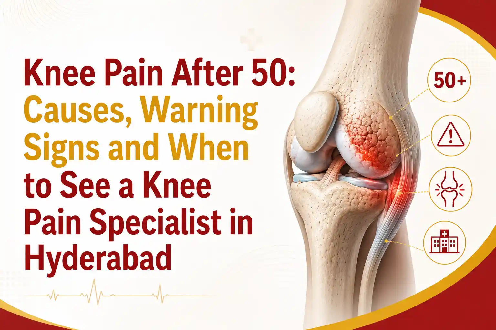

Medically Reviewed by
DR. MIR JAWAD ZAR KHANMBBS, MS - Orthopedic
M.CH-(Ortho) Joint
Replacement surgeon
Knee Pain After 50: Causes, Warning Signs and When to See a Knee Pain Specialist in Hyderabad
Knee pain in old age is so common that many people simply accept it as a normal part of getting older. Some aches do come with age, but knee pain that limits your walking, your sleep, or your independence is not something to live with quietly.
The encouraging truth is that most knee joint problems in old age can be managed well, especially when they are addressed early. This guide from Dr. Mir Jawad Zar Khan, senior orthopedic surgeon and Chairman of Germanten Hospitals in Hyderabad, explains why knees hurt after 50, why women are affected more often, and when it is time to see a specialist.
Why Knee Pain Becomes Common After 50
The knee carries your body weight through every step, and after decades of use the joint naturally shows wear. The smooth cartilage that cushions the bones gradually thins, muscles that support the joint lose some strength, and old injuries can catch up with you. This is why knee pain in old age becomes increasingly common with each decade.
In India, knee osteoarthritis is widespread. Large studies place the overall prevalence at roughly one in four to one in three adults, with the risk climbing sharply after the age of 50 and being consistently higher in women.
Common Causes of Knee Joint Problems in Old Age
- Osteoarthritis: The most common cause, where cartilage wears down and the joint becomes stiff and painful, often worsening after rest or activity.
- Rheumatoid and other inflammatory arthritis: An autoimmune process that inflames the joint lining, sometimes affecting both knees and other joints.
- Old injuries: A ligament or meniscus injury from years ago can lead to post-traumatic arthritis later in life.
- Weak supporting muscles: As thigh and hip muscles weaken with age, the knee takes more strain.
- Excess body weight: Every extra kilogram adds several kilograms of force across the knee with each step, accelerating wear.
- Other health conditions: Diabetes and high blood pressure, both common after 50, have been linked with a higher risk of knee arthritis in research studies.
Knee Pain in Women: The Role of Menopause
If you are a woman noticing more knee trouble after 50, you are not imagining it. Knee arthritis is consistently more common in women than in men, and the gap widens around menopause.
The fall in estrogen that comes with menopause affects bone and joint health, which is one reason knee pain in women rises in the years after 50. Add in the everyday load of household work, floor sitting, and squatting that is common in many Indian homes, and the knees of women in this age group can be placed under considerable strain.
The good news is that the same measures that protect any knee, including staying active, strengthening supporting muscles, managing weight, and receiving early treatment, are especially valuable for women. These steps may help slow arthritis progression and preserve mobility.
Simple Steps That Protect Ageing Knees
Most knee conditions do not require surgery, particularly when care starts early. A few consistent habits can make a meaningful difference:
- Stay active in the right way: Low-impact movement such as walking, cycling, and swimming keeps the joint moving without repeatedly pounding it.
- Strengthen the muscles around the knee: Guided exercises for the thigh and hip muscles take pressure off the joint. A physiotherapist can create a safe routine based on your mobility and symptoms.
- Manage your weight: Even a modest reduction in body weight can meaningfully lower the force placed on your knees.
- Be careful with deep bending: If squatting or sitting cross-legged causes pain, use a chair and reduce time spent on the floor.
- Use supportive footwear: Well-fitting footwear can improve stability and reduce unnecessary stress on the knee.
- Manage temporary flare-ups: Relative rest and cold packs may help with short-term pain and swelling when used appropriately.
For a fuller overview of available options, visit our hospital .
Warning Signs: When to See a Specialist Doctor for Knee Pain
Some symptoms mean it is time to stop waiting and arrange a professional assessment. See a knee specialist if you notice any of the following:
- Pain that lasts for more than a few weeks or keeps returning.
- Difficulty walking, climbing stairs, or standing up from a chair.
- Swelling, warmth, or redness around the knee.
- The knee locking, catching, or giving way.
- Pain that disturbs your sleep or is not relieved by rest and simple pain relief.
- A knee that is becoming visibly bent or deformed.
Seeing a specialist early does not mean you are heading for surgery. In many cases, it means the opposite. Early assessment gives non-surgical treatment the best chance to work and may help delay or avoid an operation.
Why Choose the Right Knee Pain Specialist in Hyderabad?
When you are looking for the best doctor for knee pain, experience and an honest, patient-first approach matter. Dr. Mir Jawad Zar Khan is a senior orthopedic and joint replacement surgeon and the Chairman of Germanten Hospitals in Hyderabad.
He completed his MS in Orthopaedics as a gold medallist, earned his M.Ch, and received further arthroplasty training in Germany. Over a career spanning more than two decades, he has performed more than 10,000 joint replacement surgeries.
His approach is to consider non-surgical methods first wherever appropriate and recommend surgery only when it is genuinely the most suitable option for the patient. For older adults in particular, a carefully planned and minimally invasive approach may support faster recovery and reduce avoidable complications.
Conclusion
Knee pain after 50 is common, but it is not something you have to endure. Whether the cause is osteoarthritis, an old injury, or joint changes associated with menopause, early attention gives you the best chance of remaining active and independent.
Small, steady steps can protect the joint, and a timely visit to a specialist often keeps surgery off the table rather than bringing it closer. Your knees carry you through life, so it is worth giving them the care they need.
Book a Knee Pain Consultation in Hyderabad
If knee pain is affecting your daily life, meet Dr. Mir Jawad Zar Khan at Germanten Hospitals, Hyderabad. He is an experienced knee pain specialist with more than two decades of experience and a conservative, patient-first approach.
Get an accurate diagnosis and a treatment plan focused on helping you remain mobile. Schedule your appointment today.
Book ConsultationFrequently Asked Questions
1. Is knee pain a normal part of ageing?
Some stiffness can come with age, but persistent pain that limits your daily life is not something you should simply accept. It usually has an identifiable cause and deserves a professional assessment.
2. Why do women get more knee pain after 50?
Knee arthritis is more common in women, and the difference increases around menopause, when falling estrogen levels affect joint and bone health. Household activity, floor sitting, and repeated squatting may add further strain.
3. Can knee pain in old age be treated without surgery?
Very often, yes. Weight management, targeted exercise, physiotherapy, medicines, and in some cases injections help many older patients avoid or delay surgery, particularly when treatment begins early.
4. When should an older adult see a knee specialist?
See a specialist if the pain lasts more than a few weeks, disturbs sleep, limits walking or stair use, or occurs with swelling, locking, catching, or the knee giving way.
5. Who is the best doctor for knee pain in Hyderabad?
Look for a senior orthopedic surgeon with substantial experience in both non-surgical care and joint replacement. Dr. Mir Jawad Zar Khan at Germanten Hospitals, Hyderabad, is one such specialist, with more than 10,000 joint procedures and a preference for conservative treatment where appropriate.
References


DR. MIR JAWAD ZAR KHAN
MBBS, MS - Orthopedic, M.CH-(Ortho) Joint Replacement Surgeon
As the visionary Chairman and Managing Director of Germanten Hospitals, Hyderabad, Dr. Mir Jawad Zar Khan brings over two decades of surgical leadership to the field. He is dedicated to transforming lives through evidence-based treatments, advanced robotic technology, and a commitment to patient quality of life.